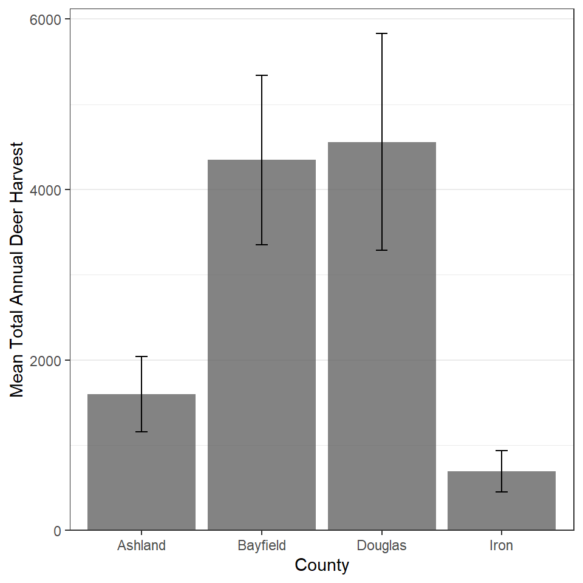
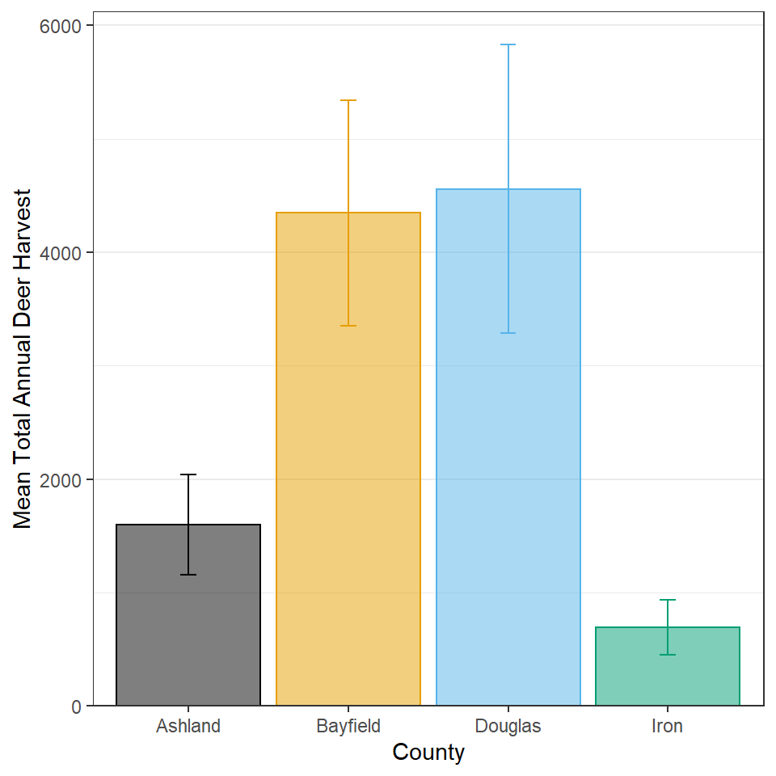
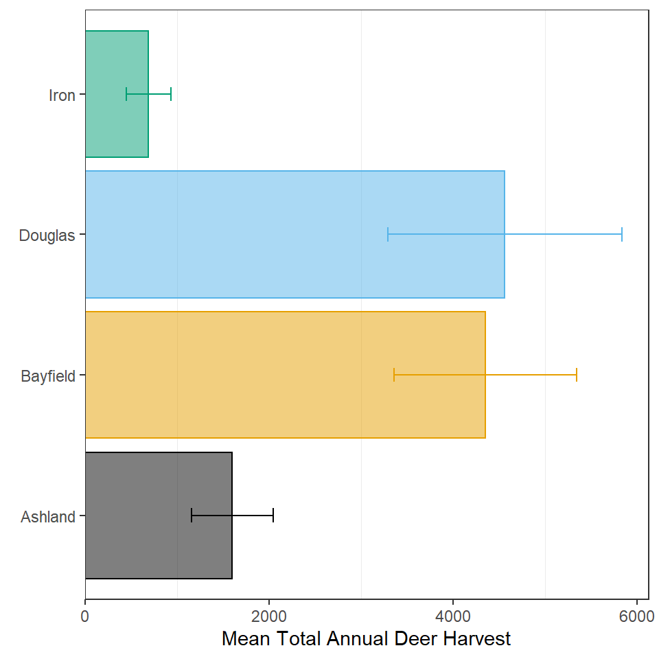
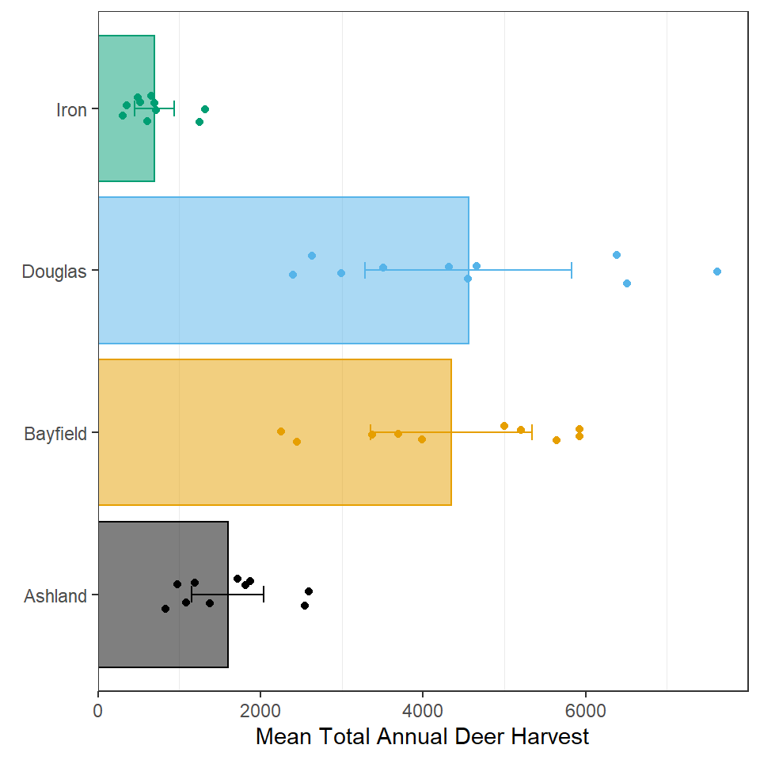
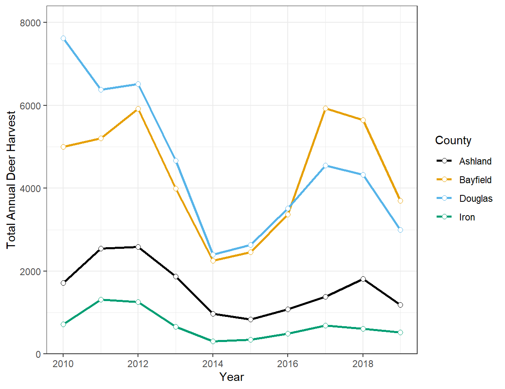

Background
 Deer hunting is ingrained in the culture and is big business in northern Wisconsin. Thus, management of the Whitetail Deer (Odocoileus virginianus) populations in this area is an important issue. Harvest rules and recommendations are based on recommendations from the Department of Natural Resources (DNR) and the County Deer Advisory Councils (CDACs), which are made up of local citizents, to the Natural Resources Board. One piece of evidence used in these recommendations are past harvest statistics. The harvest of deer from Douglas, Bayfield, Ashland, and Iron Counties, the northern-most tier of couties in Wisconsin, from 2010-2019 were recorded in the DeerHarvest.csv file, with these metadata.
Deer hunting is ingrained in the culture and is big business in northern Wisconsin. Thus, management of the Whitetail Deer (Odocoileus virginianus) populations in this area is an important issue. Harvest rules and recommendations are based on recommendations from the Department of Natural Resources (DNR) and the County Deer Advisory Councils (CDACs), which are made up of local citizents, to the Natural Resources Board. One piece of evidence used in these recommendations are past harvest statistics. The harvest of deer from Douglas, Bayfield, Ashland, and Iron Counties, the northern-most tier of couties in Wisconsin, from 2010-2019 were recorded in the DeerHarvest.csv file, with these metadata.
Total Annual Harvest by County 1
Construct ggplot2 code to match the graph below (as closely as you can).

Total Annual Harvest by County 2
Construct ggplot2 code to match the graph below (as closely as you can). Note, I don’t recommend this superfluous use of color, but I do want to see if you can figure out how to make it.

Total Annual Harvest by County 3
Construct ggplot2 code to match the graph below (as closely as you can). Hint: If you saved your plot from the previous section, you should be able to create this plot by “adding” three functions of code to the saved ggplot object.
## Scale for 'x' is already present. Adding another scale for 'x', which will
## replace the existing scale.

Total Annual Harvest by County 4
Construct ggplot2 code to match the graph below (as closely as you can). Hint: If you saved your plot from the previous section, you should be able to create this plot by “adding” one function of code to the saved ggplot object.

Total Annual Harvest by County and Year
Construct ggplot2 code to match the graph below (as closely as you can).
